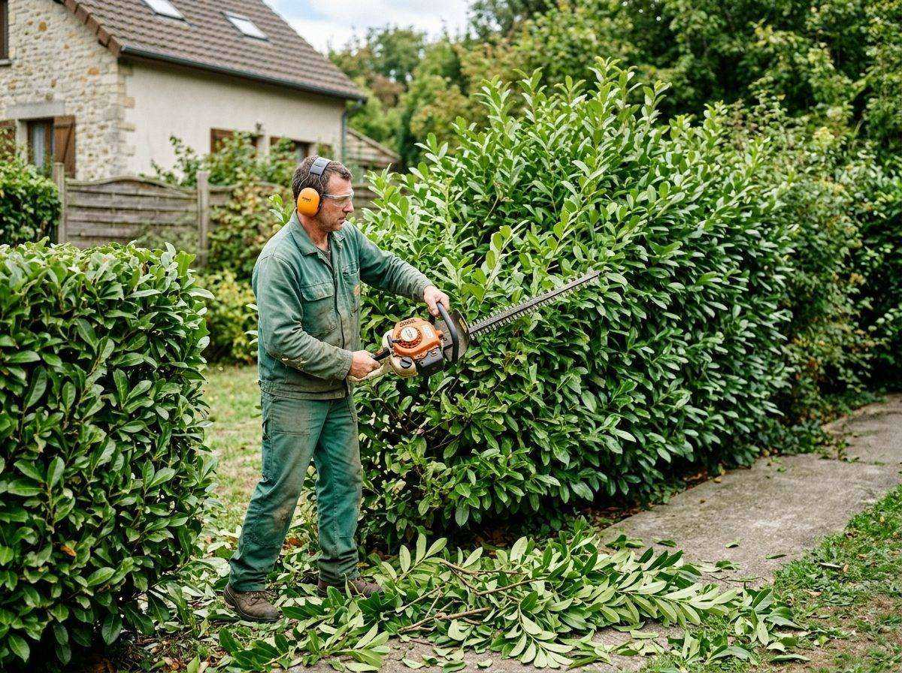
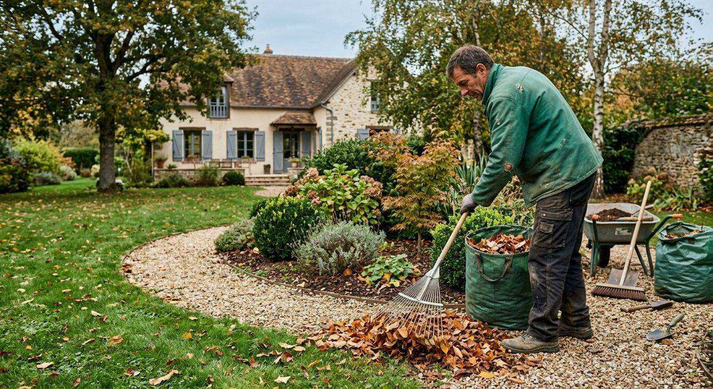
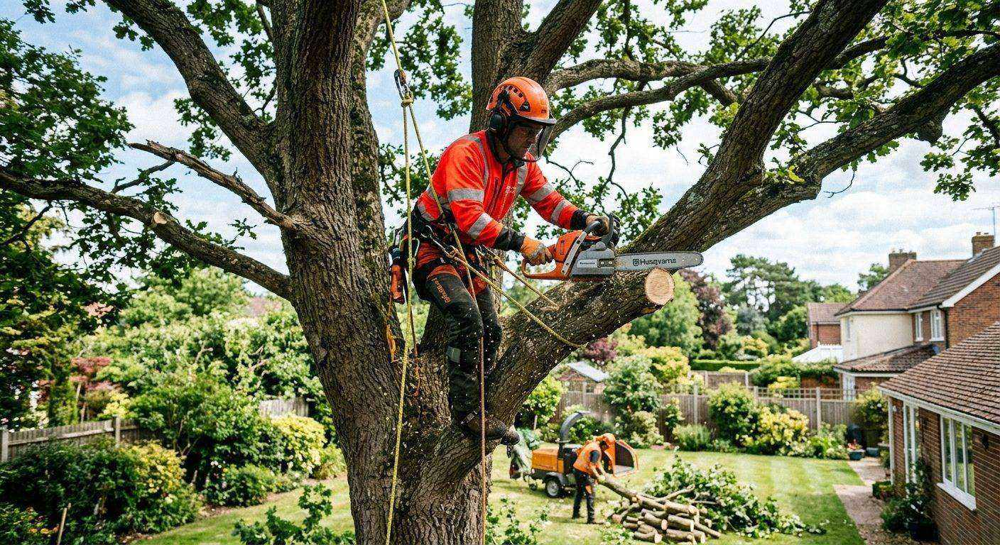
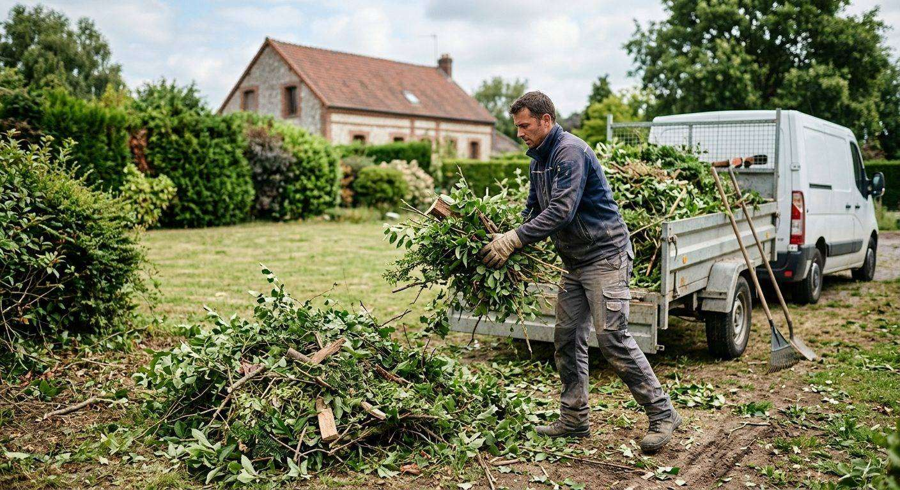

Particuliers
Entretien régulier ou création de votre jardin, avec un devis établi lors d’un rendez-vous.
Taille des haies, bêchage, tontes et débroussaillage, ramassage des feuilles, scarification et élagage.



Nous nous déplaçons chez vous pour l’entretien courant du jardin : tonte, taille, nettoyage, bêchage.

L’élagage fait partie des prestations de Brossard Fils, pour les particuliers, les syndics et les entreprises.
Entretien régulier ou création de votre jardin, avec un devis établi lors d’un rendez-vous.
Syndics de copropriété, sociétés de construction et entreprises du bâtiment, pour qui nous intervenons aussi en sous-traitance.
Dites-nous ce dont votre jardin a besoin : tonte, taille, débroussaillage ou élagage.
